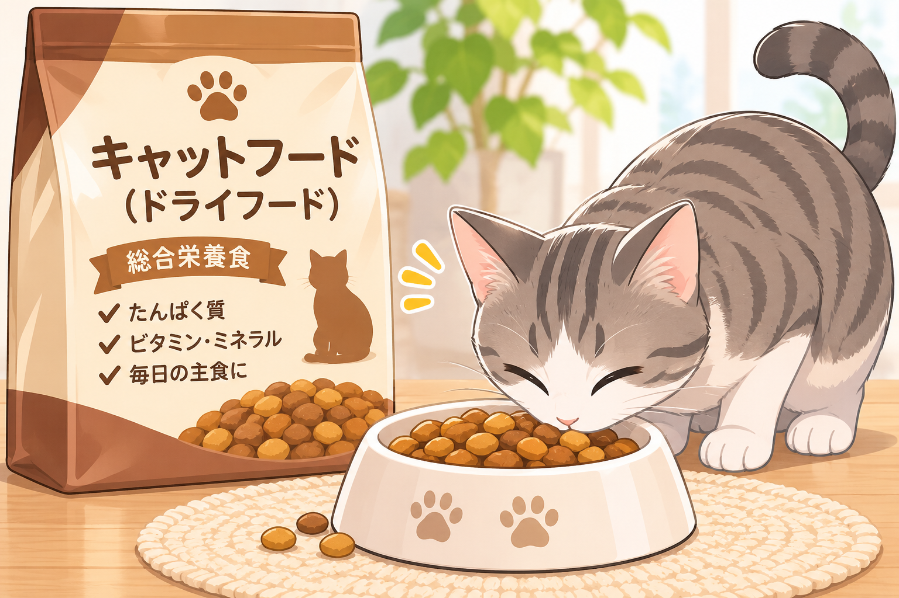
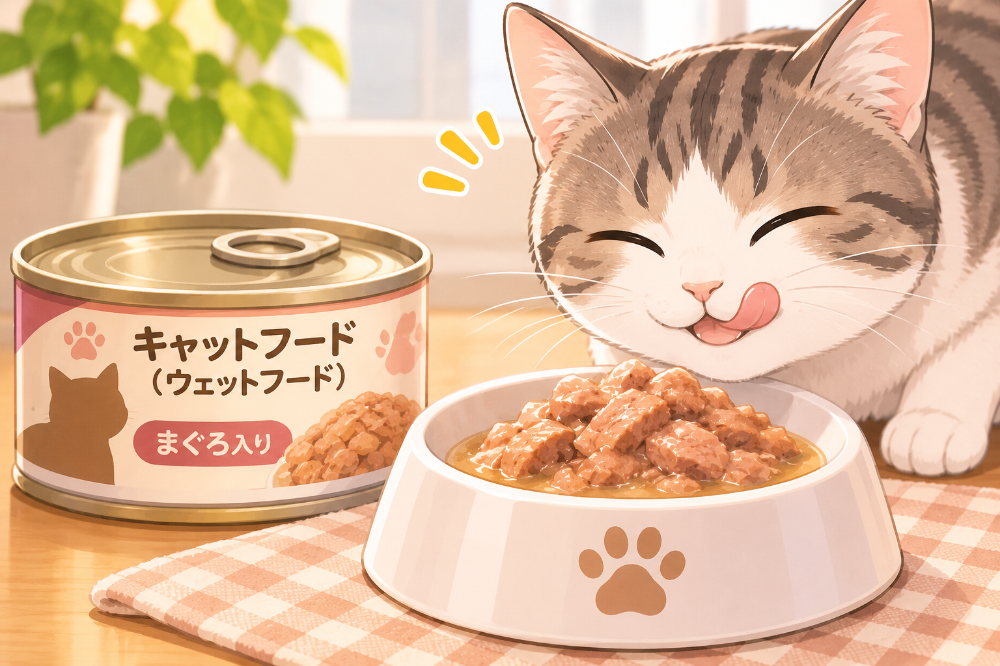
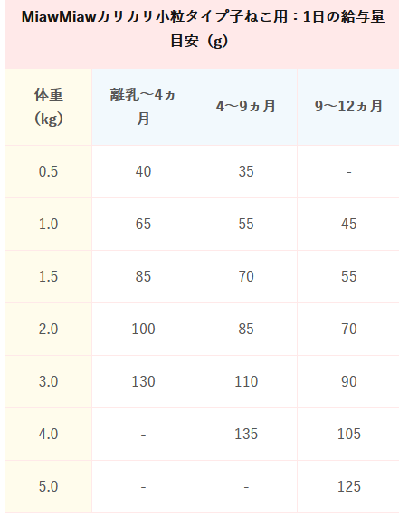
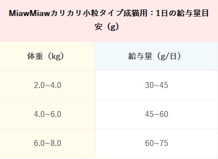
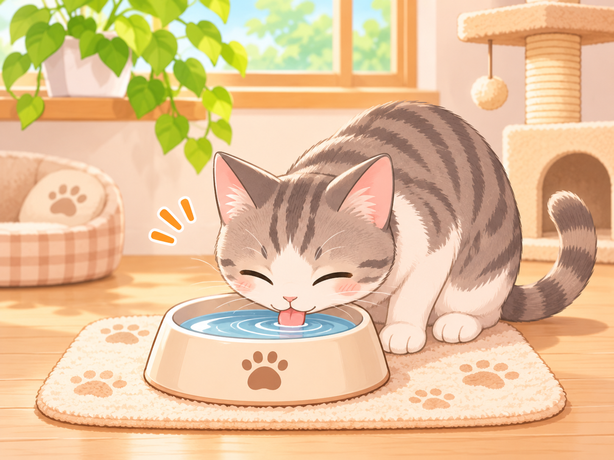

ドライフードは、水分含有量が10％程度で、栄養バランスのとれた総合栄養食です。
開封後の保存性も高く、家を留守にしがちな方が飼っている猫には、ドライフードの給与が適しているといえるでしょう。

ドライフードの水分含有量が10％程度に対し、ウェットフードは水分含有量が80~90％程度。
フレークタイプ、ペースト、スープ、パテ、ムースなど、いくつかのタイプがあります。猫の嗜好や体調、年齢に合わせて与えましょう。

子猫の食事の回数と量


ただし、猫の状態によって食事を変える必要もあります。
肥満気味の猫の場合：おやつ（間食）を控える、低カロリーのフードに替えるなど、摂取カロリーを抑える。
妊娠期や授乳期の猫の場合：通常の２～４倍のエネルギーが必要。栄養価の高いものを与える。
おやつ（間食）の量は、１日に必要なエネルギーの20％以内に抑えるようにします。市販されているフードのパッケージに表示されている給与量を守り、適正体重を維持できるように心がけましょう。

食事と同じように、猫にとって飲み水は大変重要です。猫に多い腎臓病や下部尿路疾患を予防するためにも、いつでも清潔で新鮮な水を飲めるようにすることが大切です。
反対に、異常なほど水を飲み、おしっこの量が増える場合（多飲多尿）は、何らかの病気のサインの可能性があります。多飲多尿が見られる場合は、早めに獣医師の診察を受けることをおすすめします。

人間にとって問題ない食べ物でも、猫にとっては毒性のあるものや、消化不良やお腹を壊してしまうものがあります。
与えてはいけないものとしては、ネギ類やチョコレート、ブドウ・レーズンなどがあり、与えすぎてはいけないものとしては、塩分の多いものやホウレンソウ、イカやタコなどの魚介類などがあげられます。